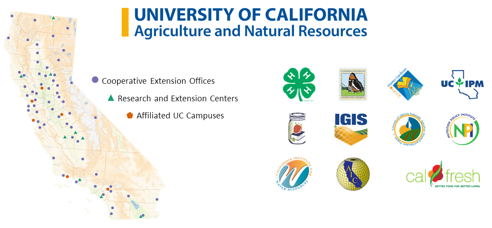

Spatial Data Analysis with R
Society for Conservation GIS, July 2020
Welcome and Review 
Welcome and Review

Chat Window
Best place for questions and comments during the presentations
Post-workshop Q&A
Anything else!


plot()plot(ca_counties %>% st_geometry() ) – just the geometry please!
plot(ca_counties["POP2015"]) – symbolize based on an attribute
many other optional arguments for plot()
axesnbreaksbreakspalgraticulekey.pos
tmaptm_shape(yose_bnd_ll) + ## Specify data source
tm_polygons() + ## Display function
tm_shape(yose_hp) + ## Specify (another) data source
tm_symbols(size=0.5, col="navy") + ## Display function
tm_shape(yose_roads) + ## Specify (another) data source
tm_lines(col="gray60", lwd=1.5, lty="dotted") + ## Display function
tm_scale_bar(position=c("right", "bottom")) + ## Global element - scale bar
tm_compass(position=c("left", "bottom")) + ## Global element - north arrow
tm_style("cobalt") ## Global style preset (default colors)tmap_mode() – static or interactive
leaflet - unlocks all the power of leaflet.js
data frames and matrices
bundled datasets
read.csv(), readr::read_csv(), RStudio Import Dataset ‘wizard’ – import csv files
glimpse(), View(), names(), nrow(), ncol(), summary() – explore contents of a data frame
common data munging tasks:
my_dataframe[rows, columns] – base R
my_dataframe %>% fun_a() %>% fun_b() %>% fun_c() %>% ... – dplyr
dplyrfilter() & slice() – for by row (i.e., attribute queries)mutate() – add new column(s)group_by(), summarise(), count(), top_n(), etc. – analysis of rows
sf objectsst_read() – import all manner of spatial datast_write() – export sf objects to all manner of formatsst_as_sf() – turn a data frame with xy columns into a sf - st_crs(epsg_num) – view (or assign) a crs to a sf objectst_transform() – project (or unproject) sf objectsst_geometry() – return just the geometry (i.e., for plotting)st_drop_geometry() – throw away the geometry (i.e., for analysis of the attribute table)
1. What is the EPSG code for geographic coordinates (WGS84 datum)?
Ans. 4326
2. Why is this important?
This is the crs used by the global GPS system, and the default crs for most GPS location software.
You may have to manually assign the crs when coverting a csv file into a sf object.
The leaflet package requires layers to be in geographic coordinates.
Geographic coordinates are inappropriate for many types of spatial analysis.
3. Bonus: What is the EPSG code for geographic coordinates in the NAD83 datum? Why is this important?
Ans. 4269
NAD83 is a common datum for many data providers (e.g., the National Park Service). You may encounter data that is unprojected (i.e., long-lat) in NAD83, as well as projected (e.g., UTM) in NAD83.
Participants from Part 1&2
What city are you from, and what is your favorite invertebrate?
Complete this form for our Geocoding Exercise:
https://forms.gle/SAbmxXmMdpihGvkQ9


Bonus slide deck:
Today’s slides are accompanied by R Notebook. No more copy-paste into RStudio!
To download the R Notebooks, run the following:
## Download R Notebook Rmd file(s) into the current working directory
nb_url <- "https://github.com/UCANR-IGIS/rspatial_data/raw/master/notebooks.zip"
temp_fn <- tempfile()
download.file(nb_url, destfile=temp_fn, mode="wb")
unzip(temp_fn)Or you can clone the workshop RStudio Cloud Project again.